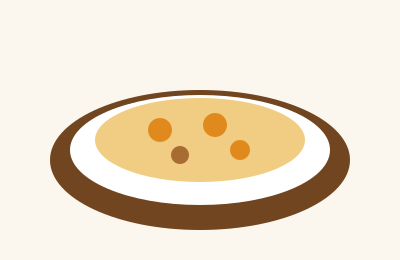

Menyu bilan tanishish
Menyu mehmonlarga mavjud taom va ichimliklarni tanlashda yordam beradi. Taom nomi bilan birga tarkibi va porsiya hajmi ham muhim ma'lumot hisoblanadi.
Buyurtmadan oldin narx, tayyorlanish vaqti va taom tarkibini aniqlashtirish foydali.
“Yaxshi dasturxon samimiy suhbatga bahona bo'ladi.”
Allergiyangiz bo'lsa, taom tarkibini xodimdan so'rang. Ushbu sayt taom tarkibi yoki narxlari bo'yicha rasmiy ma'lumot bermaydi.
Narxlar jadvali
| Toifa | Taom | Hajmi | Narxi |
|---|---|---|---|
| Asosiy taomlar | Palov | 400 g | 45 000 |
| Manti | 5 dona | 30 000 | |
| Shashlik | 1 sixda 80 g | 18 000 | |
| Salat va ichimliklar | Achchiq-chuchuk | 200 g | 14 000 |
| Ko'k choy | 1 choynak | 8 000 | |
| Qora choy limon bilan | 1 choynak | 10 000 | |
| Narxlar namunaviy. 8 kishidan ko'p bo'lsa, oldindan buyurtma bering. | |||
Taomlar haqida
Palov

Palov guruch, sabzi, piyoz va boshqa masalliqlar bilan tayyorlanadigan milliy taomlardan biridir. Retsept va ta'm hududga qarab farq qilishi mumkin.
Shashlik
Shashlik odatda sixga terilgan masalliqlarni pishirish orqali tayyorlanadi. Tarkibi va pishirish usuli buyurtma beriladigan joyga bog'liq.
Manti
Manti xamir ichiga solingan masalliq bilan tayyorlanadigan taom. Tarkibida uchrashi mumkin bo'lgan mahsulotlarni oldindan aniqlashtiring.
Menyu ro'yxati namuna bo'lib, haqiqiy taomlar va narxlarni joyning o'zidan tekshiring.
Buyurtma berish bosqichlari
- Menyuni ko'rib chiqing.
- Taom tarkibi, porsiyasi va narxini aniqlashtiring.
- Buyurtmani xodim bilan tasdiqlang.
- Agar stol band qilmoqchi bo'lsangiz, formani to'ldiring.
Muallif haqida
Ism-familiya: [Ism-familiyangizni yozing]
Guruh: [Guruh raqamingizni yozing]
Mavzuni tanlash sababi: Men kafe yoki choyxona menyusi mavzusini tanladim, chunki milliy taomlarni tartibli tanishtiradigan sayt yaratishni o'rganmoqchiman.